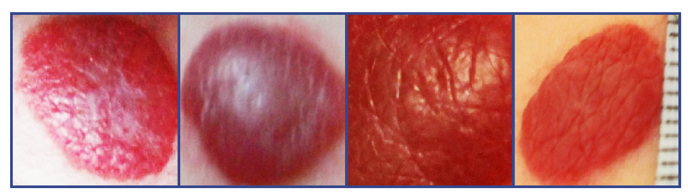
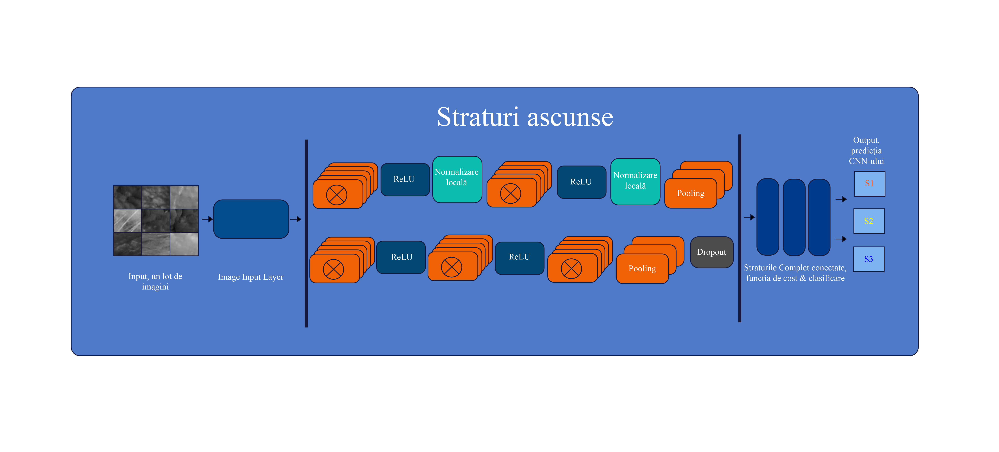
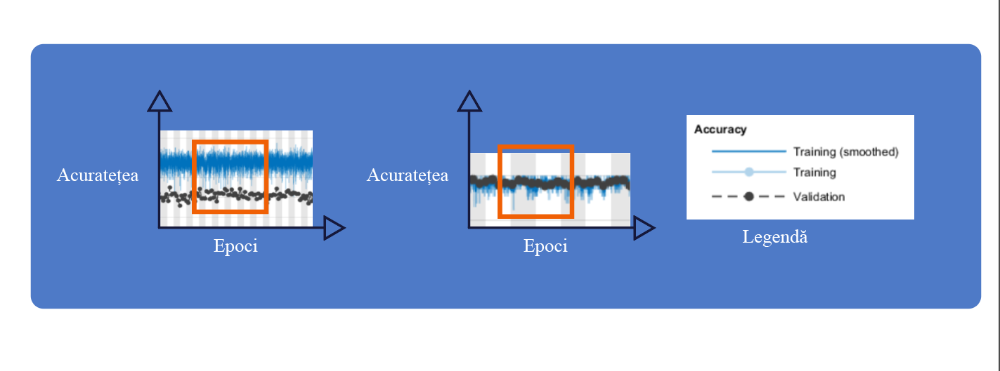

Lucrare
PDF-ul final al proiectului de diploma.
Deschide PDFProiect de diploma · Inginerie Medicala · 2018
O lucrare despre folosirea retelelor neuronale convolutionale pentru analiza si clasificarea imaginilor medicale asociate hemangioamelor infantile.
Proiectul combina preprocesarea imaginilor, generarea de sub-imagini si antrenarea unor arhitecturi CNN in MATLAB pentru clasificarea leziunilor.
O selectie de figuri din lucrare si prezentare.



Repo-ul este gandit ca vitrina publica: documente finale, cod selectat si imagini reprezentative, fara date medicale brute.
PDF-ul final al proiectului de diploma.
Deschide PDFSlide deck-ul folosit pentru sustinere.
Deschide prezentareaScripturi MATLAB pentru preprocesare, CNN si evaluare.
Vezi sursele